import numpy as np
import pandas as pd
import matplotlib.pyplot as plt
import seaborn as sns
from sklearn.manifold import MDS
from sklearn.metrics import pairwise_distances
from sklearn.preprocessing import StandardScaler, LabelEncoder
from sklearn.datasets import make_classification
from scipy.spatial.distance import pdist, squareform
import warnings
warnings.filterwarnings('ignore')
plt.rcParams['font.family'] = 'Noto Sans KR'다차원 척도법 (Multidimensional Scaling)
확률 통계

다차원 척도법(MDS)이란?
다차원 척도법(Multidimensional Scaling, MDS)은 고차원 데이터를 저차원 공간에 시각화하는 차원 축소 기법입니다. 객체들 간의 거리나 유사도를 보존하면서 2차원 또는 3차원 공간에 데이터를 투영합니다.
필요한 라이브러리 설치 및 임포트
샘플 데이터 생성
다양한 케이스를 위한 샘플 데이터를 생성합니다.
# 1. 연속변수만 포함하는 데이터
np.random.seed(42)
continuous_data = make_classification(
n_samples=100,
n_features=5,
n_classes=3,
n_redundant=0,
n_informative=5,
random_state=42
)[0]
continuous_df = pd.DataFrame(
continuous_data,
columns=[f'feature_{i+1}' for i in range(5)]
)
print("연속변수 데이터셋 shape:", continuous_df.shape)
print(continuous_df.head())연속변수 데이터셋 shape: (100, 5)
feature_1 feature_2 feature_3 feature_4 feature_5
0 0.051936 -1.797511 -1.855638 -1.396449 -1.196204
1 0.403789 0.921306 3.200886 1.984403 0.106783
2 0.300321 -0.930015 0.162936 -0.576956 2.232421
3 -0.199444 -0.496488 -1.928236 0.929103 -1.480070
4 1.144153 -1.221289 -0.581620 -0.475414 1.675759# 2. 명목변수를 포함하는 혼합 데이터
np.random.seed(42)
# 연속변수
age = np.random.normal(35, 10, 100)
income = np.random.normal(50000, 15000, 100)
experience = np.random.normal(5, 3, 100)
# 명목변수
education = np.random.choice(['고등학교', '대학교', '대학원'], 100)
department = np.random.choice(['영업', '마케팅', '개발', 'HR'], 100)
location = np.random.choice(['서울', '부산', '대구', '광주'], 100)
mixed_df = pd.DataFrame({
'age': age,
'income': income,
'experience': experience,
'education': education,
'department': department,
'location': location
})
print("\n혼합 데이터셋 shape:", mixed_df.shape)
print(mixed_df.head())
혼합 데이터셋 shape: (100, 6)
age income experience education department location
0 39.967142 28769.438869 6.073362 고등학교 개발 서울
1 33.617357 43690.320159 6.682354 대학교 마케팅 서울
2 41.476885 44859.282252 8.249154 고등학교 마케팅 광주
3 50.230299 37965.840962 8.161406 고등학교 개발 서울
4 32.658466 47580.714325 0.866992 대학원 개발 광주# 3. 거리 행렬 데이터 (도시간 거리 예시)
cities = ['서울', '부산', '대구', '인천', '광주', '대전', '울산']
# 실제 도시간 거리 (km)
distance_matrix = np.array([
[0, 325, 237, 28, 267, 140, 340], # 서울
[325, 0, 88, 353, 158, 185, 45], # 부산
[237, 88, 0, 265, 215, 97, 85], # 대구
[28, 353, 265, 0, 295, 168, 368], # 인천
[267, 158, 215, 295, 0, 168, 200], # 광주
[140, 185, 97, 168, 168, 0, 230], # 대전
[340, 45, 85, 368, 200, 230, 0] # 울산
])
distance_df = pd.DataFrame(distance_matrix,
index=cities,
columns=cities)
print("\n도시간 거리 행렬:")
print(distance_df)
도시간 거리 행렬:
서울 부산 대구 인천 광주 대전 울산
서울 0 325 237 28 267 140 340
부산 325 0 88 353 158 185 45
대구 237 88 0 265 215 97 85
인천 28 353 265 0 295 168 368
광주 267 158 215 295 0 168 200
대전 140 185 97 168 168 0 230
울산 340 45 85 368 200 230 01. 연속변수만 포함하는 기본 MDS 분석
연속변수로만 구성된 데이터에 MDS를 적용하는 예시입니다.
# 데이터 표준화
scaler = StandardScaler()
continuous_scaled = scaler.fit_transform(continuous_df)
# 기본 MDS 적용 (2차원)
mds = MDS(n_components=2, random_state=42)
mds_result = mds.fit_transform(continuous_scaled)
# 결과를 DataFrame으로 변환
mds_df = pd.DataFrame(mds_result, columns=['MDS1', 'MDS2'])
print("MDS 결과:")
print(mds_df.head())
print(f"\nStress 값: {mds.stress_:.4f}")MDS 결과:
MDS1 MDS2
0 0.329495 -1.755421
1 0.049463 3.238964
2 -0.946161 0.369966
3 0.357709 -0.007320
4 -0.769899 -0.435848
Stress 값: 3208.7256# 시각화
plt.figure(figsize=(10, 8))
plt.scatter(mds_df['MDS1'], mds_df['MDS2'], alpha=0.7, s=50)
plt.xlabel('MDS Dimension 1')
plt.ylabel('MDS Dimension 2')
plt.title('MDS 결과 - 연속변수 데이터')
plt.grid(True, alpha=0.3)
# 각 점에 인덱스 번호 표시
for i, (x, y) in enumerate(zip(mds_df['MDS1'], mds_df['MDS2'])):
if i % 10 == 0: # 10개마다 번호 표시
plt.annotate(str(i), (x, y), xytext=(5, 5),
textcoords='offset points', fontsize=8)
plt.tight_layout()
plt.show()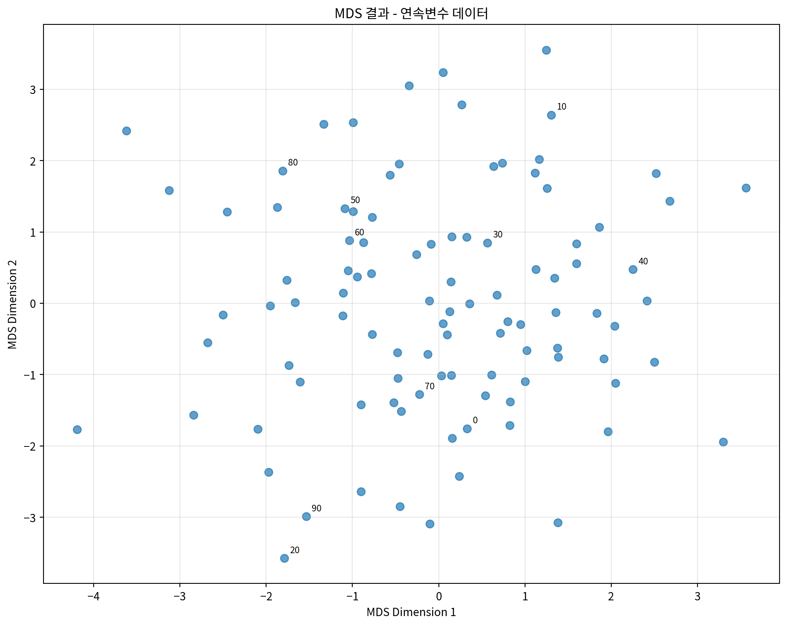
# 클래스별로 색상을 다르게 하여 시각화 (원본 클래스 정보 사용)
_, y_true = make_classification(
n_samples=100,
n_features=5,
n_classes=3,
n_redundant=0,
n_informative=5,
random_state=42
)
plt.figure(figsize=(10, 8))
colors = ['red', 'blue', 'green']
for i in range(3):
mask = y_true == i
plt.scatter(mds_df.loc[mask, 'MDS1'],
mds_df.loc[mask, 'MDS2'],
c=colors[i], label=f'Class {i}', alpha=0.7, s=50)
plt.xlabel('MDS Dimension 1')
plt.ylabel('MDS Dimension 2')
plt.title('MDS 결과 - 클래스별 색상 구분')
plt.legend()
plt.grid(True, alpha=0.3)
plt.tight_layout()
plt.show()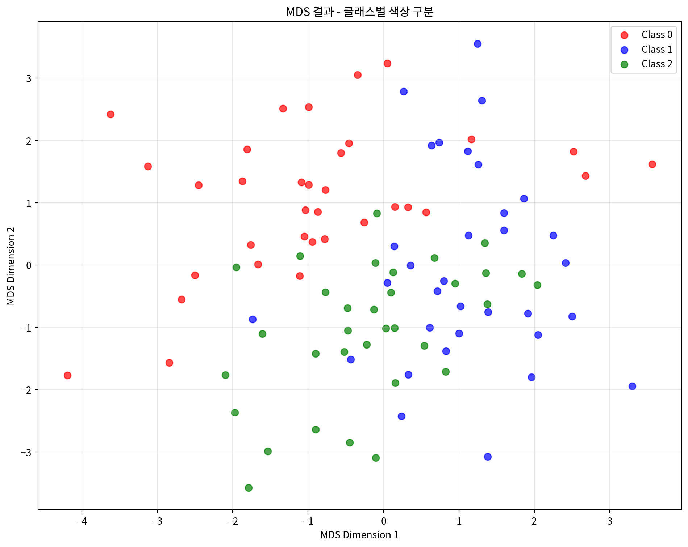
# 거리 보존 정도 확인
from sklearn.metrics import pairwise_distances
# 원본 데이터의 거리 행렬
original_distances = pairwise_distances(continuous_scaled)
# MDS 결과의 거리 행렬
mds_distances = pairwise_distances(mds_result)
# 거리 상관계수 계산
distance_correlation = np.corrcoef(
original_distances.flatten(),
mds_distances.flatten()
)[0, 1]
print(f"원본 거리와 MDS 거리의 상관계수: {distance_correlation:.4f}")
# Shepard diagram 그리기
plt.figure(figsize=(8, 6))
plt.scatter(original_distances.flatten(),
mds_distances.flatten(),
alpha=0.3, s=1)
plt.xlabel('Original Distances')
plt.ylabel('MDS Distances')
plt.title('Shepard Diagram - 거리 보존 정도')
plt.plot([0, original_distances.max()],
[0, original_distances.max()],
'r--', alpha=0.8)
plt.grid(True, alpha=0.3)
plt.tight_layout()
plt.show()원본 거리와 MDS 거리의 상관계수: 0.8435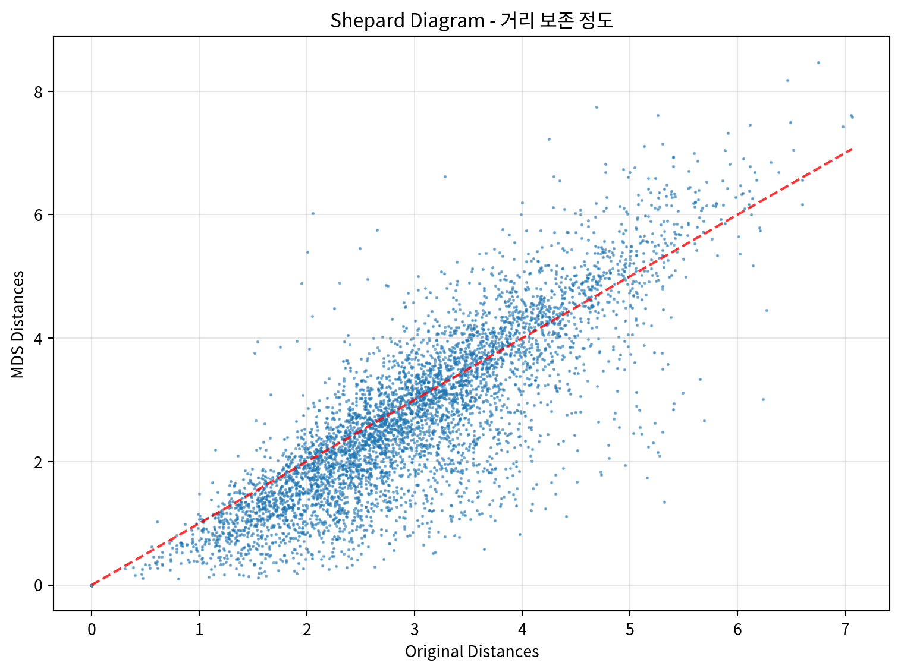
2. 명목변수를 포함하는 혼합 데이터 MDS 분석
명목변수와 연속변수가 혼합된 데이터에 MDS를 적용하는 예시입니다.
# 혼합 데이터 전처리
def preprocess_mixed_data(df):
"""혼합 데이터를 MDS에 적합하도록 전처리"""
processed_df = df.copy()
# 연속변수 표준화
continuous_cols = ['age', 'income', 'experience']
scaler = StandardScaler()
processed_df[continuous_cols] = scaler.fit_transform(processed_df[continuous_cols])
# 명목변수 원핫 인코딩
categorical_cols = ['education', 'department', 'location']
for col in categorical_cols:
dummies = pd.get_dummies(processed_df[col], prefix=col)
processed_df = pd.concat([processed_df, dummies], axis=1)
processed_df.drop(col, axis=1, inplace=True)
return processed_df
# 데이터 전처리
mixed_processed = preprocess_mixed_data(mixed_df)
print("전처리된 혼합 데이터 shape:", mixed_processed.shape)
print("\n컬럼 목록:")
print(mixed_processed.columns.tolist())전처리된 혼합 데이터 shape: (100, 14)
컬럼 목록:
['age', 'income', 'experience', 'education_고등학교', 'education_대학교', 'education_대학원', 'department_HR', 'department_개발', 'department_마케팅', 'department_영업', 'location_광주', 'location_대구', 'location_부산', 'location_서울']# 혼합 데이터에 MDS 적용
mds_mixed = MDS(n_components=2, random_state=42)
mds_mixed_result = mds_mixed.fit_transform(mixed_processed)
# 결과를 DataFrame으로 변환
mds_mixed_df = pd.DataFrame(mds_mixed_result, columns=['MDS1', 'MDS2'])
print("혼합 데이터 MDS 결과:")
print(mds_mixed_df.head())
print(f"\nStress 값: {mds_mixed.stress_:.4f}")혼합 데이터 MDS 결과:
MDS1 MDS2
0 1.112396 -1.853207
1 0.199845 -1.172801
2 -0.073573 -1.903613
3 -0.293398 -2.665801
4 1.287388 1.284487
Stress 값: 3843.1912# 부서별로 색상을 다르게 하여 시각화
plt.figure(figsize=(12, 8))
departments = mixed_df['department'].unique()
colors = ['red', 'blue', 'green', 'orange']
for i, dept in enumerate(departments):
mask = mixed_df['department'] == dept
plt.scatter(mds_mixed_df.loc[mask, 'MDS1'],
mds_mixed_df.loc[mask, 'MDS2'],
c=colors[i], label=dept, alpha=0.7, s=60)
plt.xlabel('MDS Dimension 1')
plt.ylabel('MDS Dimension 2')
plt.title('MDS 결과 - 부서별 색상 구분 (혼합 데이터)')
plt.legend()
plt.grid(True, alpha=0.3)
plt.tight_layout()
plt.show()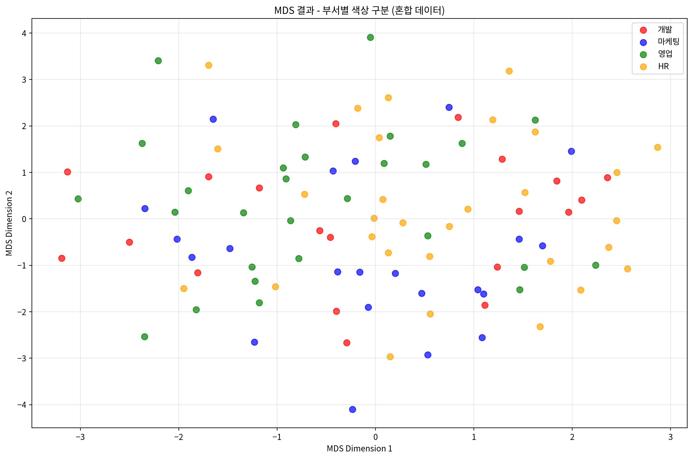
# 학력별로 마커를 다르게 하여 시각화
plt.figure(figsize=(12, 8))
educations = mixed_df['education'].unique()
markers = ['o', 's', '^']
for i, edu in enumerate(educations):
mask = mixed_df['education'] == edu
plt.scatter(mds_mixed_df.loc[mask, 'MDS1'],
mds_mixed_df.loc[mask, 'MDS2'],
marker=markers[i], label=edu, alpha=0.7, s=60)
plt.xlabel('MDS Dimension 1')
plt.ylabel('MDS Dimension 2')
plt.title('MDS 결과 - 학력별 마커 구분 (혼합 데이터)')
plt.legend()
plt.grid(True, alpha=0.3)
plt.tight_layout()
plt.show()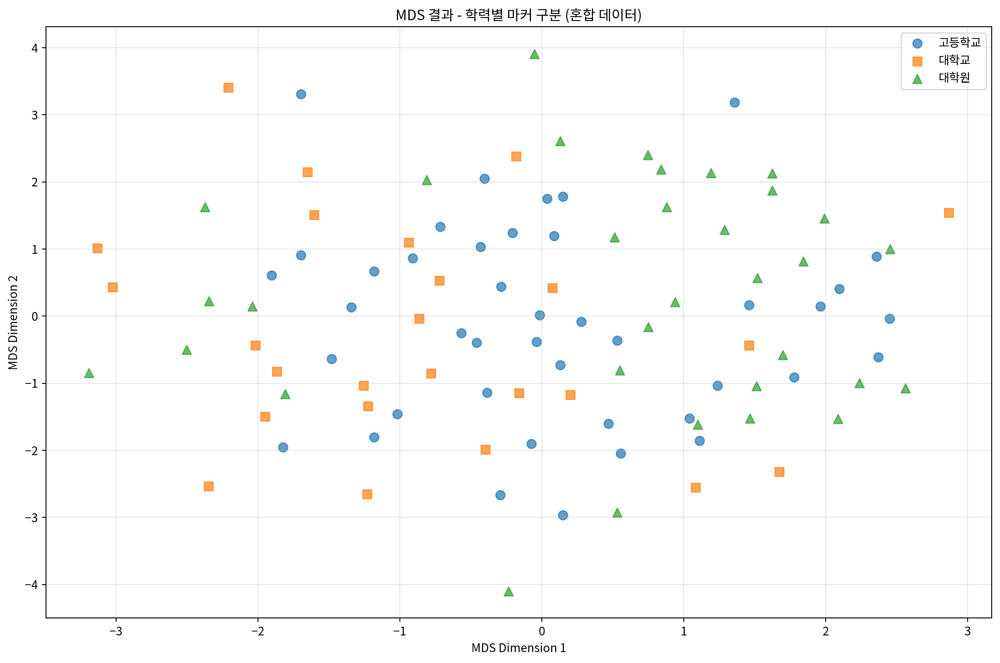
# 부서와 학력을 함께 시각화
fig, (ax1, ax2) = plt.subplots(1, 2, figsize=(20, 8))
# 부서별 시각화
departments = mixed_df['department'].unique()
colors = ['red', 'blue', 'green', 'orange']
for i, dept in enumerate(departments):
mask = mixed_df['department'] == dept
ax1.scatter(mds_mixed_df.loc[mask, 'MDS1'],
mds_mixed_df.loc[mask, 'MDS2'],
c=colors[i], label=dept, alpha=0.7, s=60)
ax1.set_xlabel('MDS Dimension 1')
ax1.set_ylabel('MDS Dimension 2')
ax1.set_title('부서별 구분')
ax1.legend()
ax1.grid(True, alpha=0.3)
# 학력별 시각화
educations = mixed_df['education'].unique()
colors2 = ['purple', 'brown', 'pink']
for i, edu in enumerate(educations):
mask = mixed_df['education'] == edu
ax2.scatter(mds_mixed_df.loc[mask, 'MDS1'],
mds_mixed_df.loc[mask, 'MDS2'],
c=colors2[i], label=edu, alpha=0.7, s=60)
ax2.set_xlabel('MDS Dimension 1')
ax2.set_ylabel('MDS Dimension 2')
ax2.set_title('학력별 구분')
ax2.legend()
ax2.grid(True, alpha=0.3)
plt.tight_layout()
plt.show()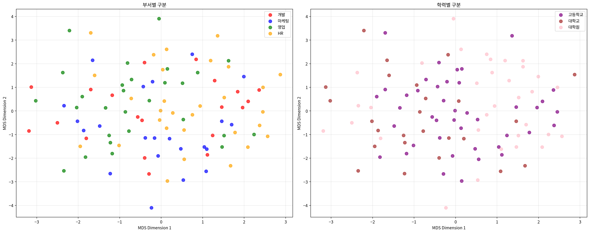
# Gower 거리를 사용한 혼합 데이터 MDS
def gower_distance(X):
"""Gower 거리 계산 (연속변수와 명목변수 혼합용)"""
n_samples, n_features = X.shape
distances = np.zeros((n_samples, n_samples))
# 각 피처가 연속변수인지 이진변수인지 판단
is_continuous = []
for j in range(n_features):
unique_vals = np.unique(X[:, j])
is_continuous.append(len(unique_vals) > 2)
for i in range(n_samples):
for j in range(i+1, n_samples):
distance = 0
for k in range(n_features):
if is_continuous[k]:
# 연속변수: 절대차이를 범위로 나눔
range_k = np.max(X[:, k]) - np.min(X[:, k])
if range_k > 0:
distance += abs(X[i, k] - X[j, k]) / range_k
else:
# 명목변수: 같으면 0, 다르면 1
distance += 0 if X[i, k] == X[j, k] else 1
distances[i, j] = distances[j, i] = distance / n_features
return distances
# 원본 혼합 데이터로 Gower 거리 계산
mixed_array = mixed_processed.values
gower_dist = gower_distance(mixed_array)
# Gower 거리 기반 MDS
mds_gower = MDS(n_components=2, dissimilarity='precomputed', random_state=42)
mds_gower_result = mds_gower.fit_transform(gower_dist)
# 결과 시각화
plt.figure(figsize=(10, 8))
departments = mixed_df['department'].unique()
colors = ['red', 'blue', 'green', 'orange']
for i, dept in enumerate(departments):
mask = mixed_df['department'] == dept
plt.scatter(mds_gower_result[mask, 0],
mds_gower_result[mask, 1],
c=colors[i], label=dept, alpha=0.7, s=60)
plt.xlabel('MDS Dimension 1')
plt.ylabel('MDS Dimension 2')
plt.title('Gower 거리 기반 MDS 결과')
plt.legend()
plt.grid(True, alpha=0.3)
plt.tight_layout()
plt.show()
print(f"Gower 거리 기반 MDS Stress 값: {mds_gower.stress_:.4f}")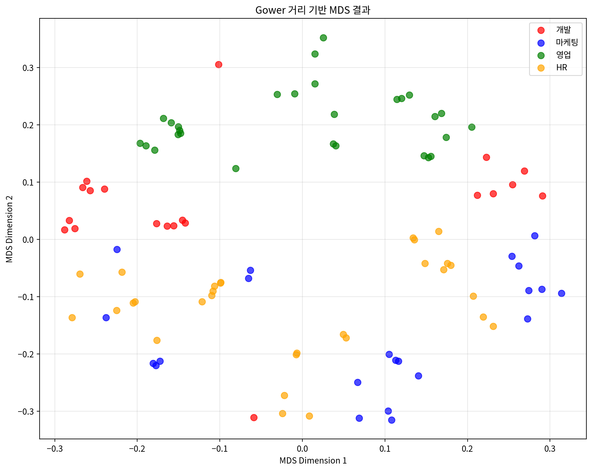
Gower 거리 기반 MDS Stress 값: 70.55403. 거리 행렬 기반 MDS 분석
미리 계산된 거리 행렬을 사용하여 MDS를 적용하는 예시입니다.
# 도시간 거리 행렬로 MDS 수행
mds_distance = MDS(n_components=2, dissimilarity='precomputed', random_state=42)
city_mds_result = mds_distance.fit_transform(distance_matrix)
# 결과를 DataFrame으로 변환
city_mds_df = pd.DataFrame(city_mds_result,
columns=['MDS1', 'MDS2'],
index=cities)
print("도시 MDS 결과:")
print(city_mds_df)
print(f"\nStress 값: {mds_distance.stress_:.4f}")도시 MDS 결과:
MDS1 MDS2
서울 -85.433007 -154.346568
부산 59.327174 130.031955
대구 -27.112189 81.647524
인천 -99.393194 -179.287057
광주 145.126739 -10.586077
대전 -24.860674 -32.769460
울산 32.345151 165.309682
Stress 값: 2023.2616# 도시 위치 시각화
plt.figure(figsize=(12, 10))
colors = ['red', 'blue', 'green', 'orange', 'purple', 'brown', 'pink']
for i, city in enumerate(cities):
plt.scatter(city_mds_df.loc[city, 'MDS1'],
city_mds_df.loc[city, 'MDS2'],
c=colors[i], s=200, alpha=0.7,
label=city, edgecolors='black', linewidth=1)
# 도시 이름 표시
plt.annotate(city,
(city_mds_df.loc[city, 'MDS1'], city_mds_df.loc[city, 'MDS2']),
xytext=(10, 10), textcoords='offset points',
fontsize=12, fontweight='bold')
plt.xlabel('MDS Dimension 1')
plt.ylabel('MDS Dimension 2')
plt.title('도시간 거리 기반 MDS 결과')
plt.grid(True, alpha=0.3)
plt.legend(bbox_to_anchor=(1.05, 1), loc='upper left')
plt.tight_layout()
plt.show()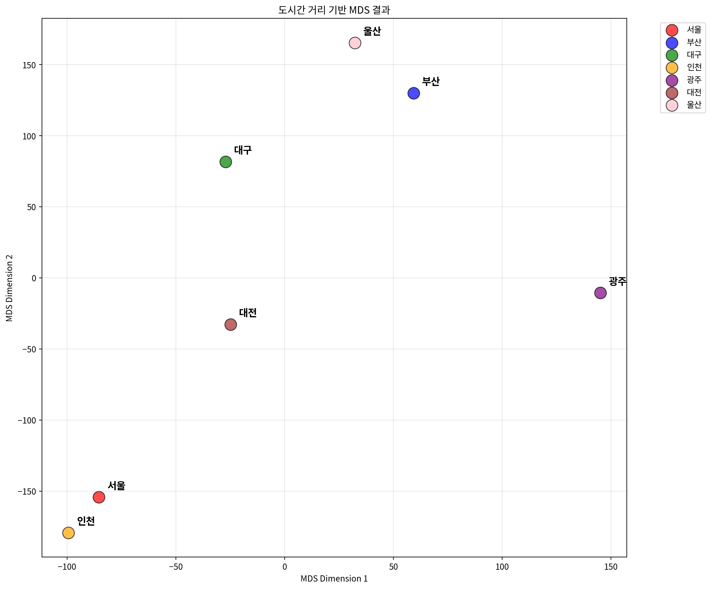
# 실제 거리와 MDS 거리 비교
mds_city_distances = pairwise_distances(city_mds_result)
# 거리 상관계수 계산
city_distance_correlation = np.corrcoef(
distance_matrix.flatten(),
mds_city_distances.flatten()
)[0, 1]
print(f"실제 거리와 MDS 거리의 상관계수: {city_distance_correlation:.4f}")
# Shepard diagram for city distances
plt.figure(figsize=(8, 6))
plt.scatter(distance_matrix.flatten(),
mds_city_distances.flatten(),
alpha=0.6, s=30)
plt.xlabel('Original Distances (km)')
plt.ylabel('MDS Distances')
plt.title('Shepard Diagram - 도시간 거리 보존 정도')
plt.plot([0, distance_matrix.max()],
[0, distance_matrix.max()],
'r--', alpha=0.8)
plt.grid(True, alpha=0.3)
plt.tight_layout()
plt.show()실제 거리와 MDS 거리의 상관계수: 0.9970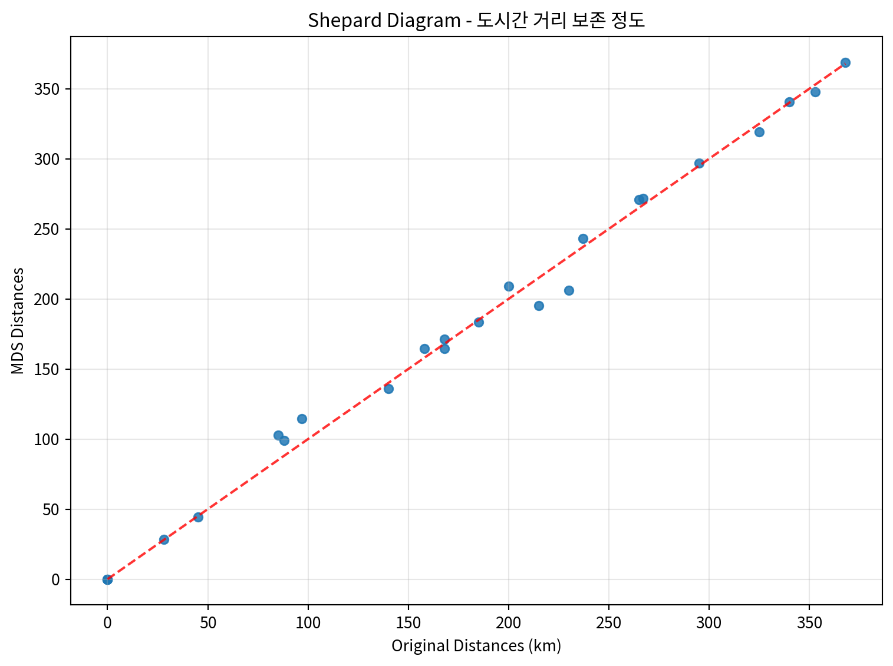
# 3차원 MDS 수행
mds_3d = MDS(n_components=3, dissimilarity='precomputed', random_state=42)
city_mds_3d_result = mds_3d.fit_transform(distance_matrix)
# 3D 시각화
from mpl_toolkits.mplot3d import Axes3D
fig = plt.figure(figsize=(12, 10))
ax = fig.add_subplot(111, projection='3d')
colors = ['red', 'blue', 'green', 'orange', 'purple', 'brown', 'pink']
for i, city in enumerate(cities):
ax.scatter(city_mds_3d_result[i, 0],
city_mds_3d_result[i, 1],
city_mds_3d_result[i, 2],
c=colors[i], s=200, alpha=0.7,
label=city, edgecolors='black', linewidth=1)
# 도시 이름 표시
ax.text(city_mds_3d_result[i, 0],
city_mds_3d_result[i, 1],
city_mds_3d_result[i, 2],
city, fontsize=10, fontweight='bold')
ax.set_xlabel('MDS Dimension 1')
ax.set_ylabel('MDS Dimension 2')
ax.set_zlabel('MDS Dimension 3')
ax.set_title('3차원 MDS 결과 - 도시간 거리')
ax.legend(bbox_to_anchor=(1.1, 1), loc='upper left')
plt.tight_layout()
plt.show()
print(f"3차원 MDS Stress 값: {mds_3d.stress_:.4f}")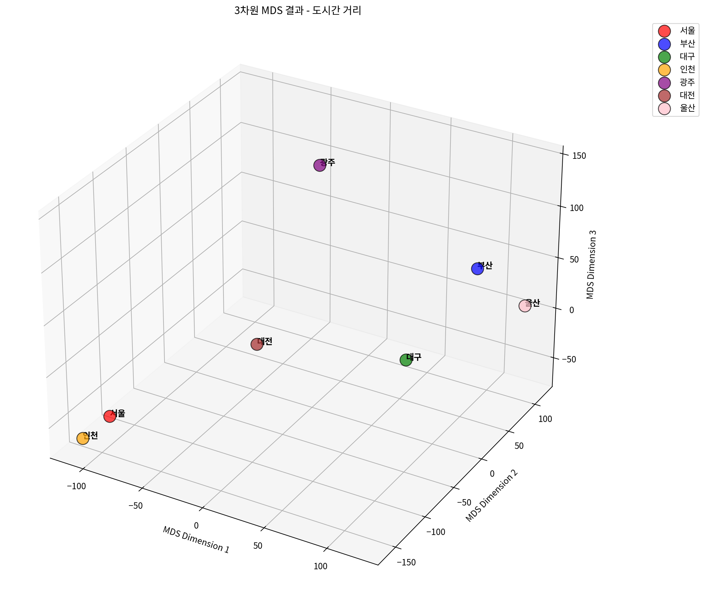
3차원 MDS Stress 값: 1974.2860# 차원별 Stress 값 비교
dimensions = range(1, 6)
stress_values = []
for dim in dimensions:
mds_temp = MDS(n_components=dim, dissimilarity='precomputed', random_state=42)
mds_temp.fit(distance_matrix)
stress_values.append(mds_temp.stress_)
# Stress plot (Scree plot)
plt.figure(figsize=(10, 6))
plt.plot(dimensions, stress_values, 'bo-', linewidth=2, markersize=8)
plt.xlabel('차원 수')
plt.ylabel('Stress 값')
plt.title('차원 수에 따른 Stress 값 변화')
plt.grid(True, alpha=0.3)
plt.xticks(dimensions)
# 각 점에 stress 값 표시
for i, stress in enumerate(stress_values):
plt.annotate(f'{stress:.3f}',
(dimensions[i], stress),
xytext=(0, 10), textcoords='offset points',
ha='center', fontsize=10)
plt.tight_layout()
plt.show()
print("차원별 Stress 값:")
for dim, stress in zip(dimensions, stress_values):
print(f"{dim}차원: {stress:.4f}")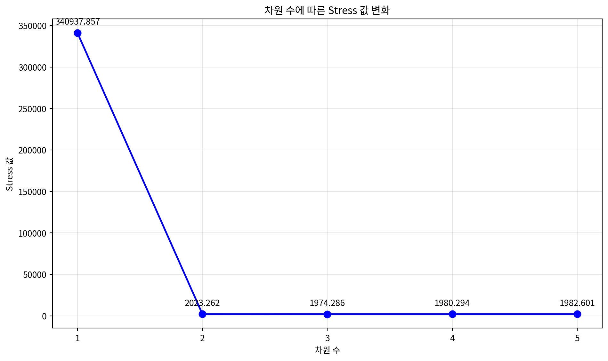
차원별 Stress 값:
1차원: 340937.8571
2차원: 2023.2616
3차원: 1974.2860
4차원: 1980.2935
5차원: 1982.60114. 다양한 MDS 변형 기법
다양한 MDS 알고리즘을 비교해보는 예시입니다.
# 다양한 MDS 알고리즘 비교
from sklearn.manifold import MDS
# 연속 데이터를 사용하여 다양한 MDS 알고리즘 비교
algorithms = {
'Classical MDS': MDS(metric=True, random_state=42),
'Non-metric MDS': MDS(metric=False, random_state=42),
'MDS with different init': MDS(metric=True, n_init=10, random_state=42)
}
fig, axes = plt.subplots(1, 3, figsize=(18, 6))
for idx, (name, mds_algo) in enumerate(algorithms.items()):
# MDS 수행
result = mds_algo.fit_transform(continuous_scaled)
# 클래스별 색상으로 시각화
colors = ['red', 'blue', 'green']
for i in range(3):
mask = y_true == i
axes[idx].scatter(result[mask, 0], result[mask, 1],
c=colors[i], label=f'Class {i}', alpha=0.7, s=30)
axes[idx].set_xlabel('MDS Dimension 1')
axes[idx].set_ylabel('MDS Dimension 2')
axes[idx].set_title(f'{name}\nStress: {mds_algo.stress_:.4f}')
axes[idx].legend()
axes[idx].grid(True, alpha=0.3)
plt.tight_layout()
plt.show()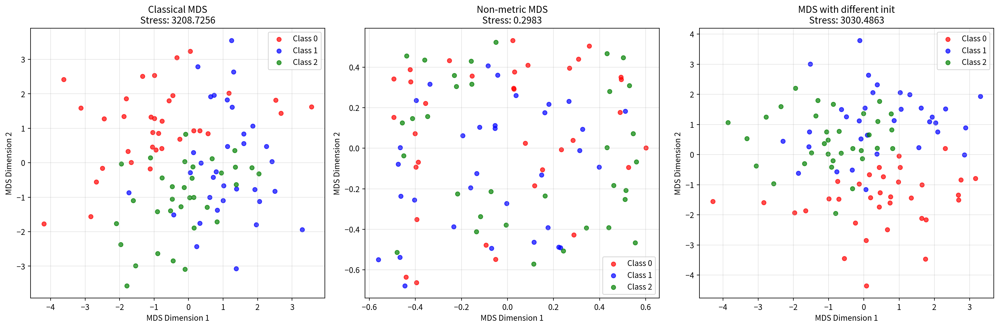
# 거리 메트릭 비교
from sklearn.metrics.pairwise import euclidean_distances, manhattan_distances, cosine_distances
# 다양한 거리 메트릭으로 MDS 수행
distance_metrics = {
'Euclidean': euclidean_distances(continuous_scaled),
'Manhattan': manhattan_distances(continuous_scaled),
'Cosine': cosine_distances(continuous_scaled)
}
fig, axes = plt.subplots(1, 3, figsize=(18, 6))
for idx, (metric_name, dist_matrix) in enumerate(distance_metrics.items()):
# 거리 행렬을 사용한 MDS
mds_metric = MDS(n_components=2, dissimilarity='precomputed', random_state=42)
result = mds_metric.fit_transform(dist_matrix)
# 클래스별 색상으로 시각화
colors = ['red', 'blue', 'green']
for i in range(3):
mask = y_true == i
axes[idx].scatter(result[mask, 0], result[mask, 1],
c=colors[i], label=f'Class {i}', alpha=0.7, s=30)
axes[idx].set_xlabel('MDS Dimension 1')
axes[idx].set_ylabel('MDS Dimension 2')
axes[idx].set_title(f'{metric_name} Distance MDS\nStress: {mds_metric.stress_:.4f}')
axes[idx].legend()
axes[idx].grid(True, alpha=0.3)
plt.tight_layout()
plt.show()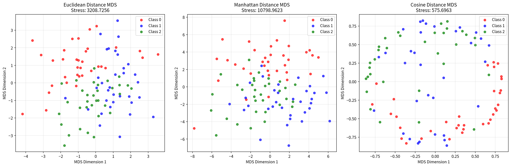
5. MDS 결과 해석 및 평가
MDS 결과를 해석하고 평가하는 방법들을 소개합니다.
# Stress 값 해석 기준
def interpret_stress(stress_value):
"""Stress 값을 해석하는 함수"""
if stress_value < 0.05:
return "매우 좋음 (Excellent)"
elif stress_value < 0.1:
return "좋음 (Good)"
elif stress_value < 0.2:
return "보통 (Fair)"
else:
return "나쁨 (Poor)"
# 각 MDS 결과의 Stress 값 해석
print("=== MDS 결과 평가 ===")
print(f"연속변수 MDS Stress: {mds.stress_:.4f} - {interpret_stress(mds.stress_)}")
print(f"혼합데이터 MDS Stress: {mds_mixed.stress_:.4f} - {interpret_stress(mds_mixed.stress_)}")
print(f"Gower 거리 MDS Stress: {mds_gower.stress_:.4f} - {interpret_stress(mds_gower.stress_)}")
print(f"도시 거리 MDS Stress: {mds_distance.stress_:.4f} - {interpret_stress(mds_distance.stress_)}")=== MDS 결과 평가 ===
연속변수 MDS Stress: 3208.7256 - 나쁨 (Poor)
혼합데이터 MDS Stress: 3843.1912 - 나쁨 (Poor)
Gower 거리 MDS Stress: 70.5540 - 나쁨 (Poor)
도시 거리 MDS Stress: 2023.2616 - 나쁨 (Poor)# 차원 축소 효과 비교
def calculate_explained_variance_ratio(original_data, mds_result):
"""MDS로 설명되는 분산 비율 계산"""
original_var = np.var(original_data, axis=0).sum()
mds_var = np.var(mds_result, axis=0).sum()
return mds_var / original_var
# 연속변수 데이터의 분산 설명 비율
explained_ratio = calculate_explained_variance_ratio(continuous_scaled, mds_result)
print(f"\n연속변수 MDS 분산 설명 비율: {explained_ratio:.4f} ({explained_ratio*100:.2f}%)")
# 원본 데이터 차원과 MDS 결과 비교
print(f"원본 데이터 차원: {continuous_scaled.shape[1]}차원")
print(f"MDS 결과 차원: {mds_result.shape[1]}차원")
print(f"차원 축소율: {(1 - mds_result.shape[1]/continuous_scaled.shape[1])*100:.1f}%")
연속변수 MDS 분산 설명 비율: 0.9358 (93.58%)
원본 데이터 차원: 5차원
MDS 결과 차원: 2차원
차원 축소율: 60.0%# MDS vs PCA 비교
from sklearn.decomposition import PCA
# PCA 수행
pca = PCA(n_components=2, random_state=42)
pca_result = pca.fit_transform(continuous_scaled)
# 비교 시각화
fig, (ax1, ax2) = plt.subplots(1, 2, figsize=(16, 6))
# MDS 결과
colors = ['red', 'blue', 'green']
for i in range(3):
mask = y_true == i
ax1.scatter(mds_result[mask, 0], mds_result[mask, 1],
c=colors[i], label=f'Class {i}', alpha=0.7, s=30)
ax1.set_xlabel('MDS Dimension 1')
ax1.set_ylabel('MDS Dimension 2')
ax1.set_title(f'MDS 결과\nStress: {mds.stress_:.4f}')
ax1.legend()
ax1.grid(True, alpha=0.3)
# PCA 결과
for i in range(3):
mask = y_true == i
ax2.scatter(pca_result[mask, 0], pca_result[mask, 1],
c=colors[i], label=f'Class {i}', alpha=0.7, s=30)
ax2.set_xlabel('PC1')
ax2.set_ylabel('PC2')
ax2.set_title(f'PCA 결과\n설명분산비율: {pca.explained_variance_ratio_.sum():.4f}')
ax2.legend()
ax2.grid(True, alpha=0.3)
plt.tight_layout()
plt.show()
print(f"PCA 설명 분산 비율: {pca.explained_variance_ratio_.sum():.4f} ({pca.explained_variance_ratio_.sum()*100:.2f}%)")
print(f"각 주성분별 설명 분산 비율: PC1={pca.explained_variance_ratio_[0]:.4f}, PC2={pca.explained_variance_ratio_[1]:.4f}")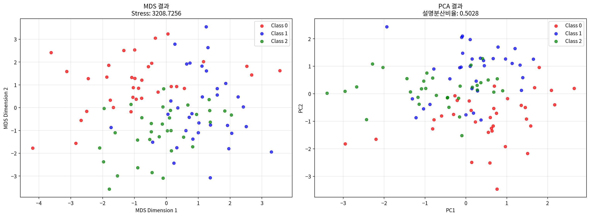
PCA 설명 분산 비율: 0.5028 (50.28%)
각 주성분별 설명 분산 비율: PC1=0.2727, PC2=0.2301결론
다차원 척도법(MDS)은 다양한 유형의 데이터에 적용할 수 있는 강력한 차원 축소 기법입니다:
주요 특징:
- 거리 보존: 원본 데이터의 거리 관계를 저차원에서 최대한 보존
- 유연성: 연속변수, 명목변수, 거리 행렬 등 다양한 데이터 타입 지원
- 직관적 해석: 2D/3D 시각화를 통한 직관적인 데이터 이해
적용 사례:
- 연속변수: 표준화 후 직접 적용
- 혼합 데이터: 원핫 인코딩 또는 Gower 거리 사용
- 거리 행렬: 미리 계산된 거리 정보 활용
평가 지표:
- Stress 값: 낮을수록 좋음 (< 0.1이 권장)
- 거리 상관계수: 원본과 MDS 거리의 상관관계
- Shepard diagram: 거리 보존 정도 시각화